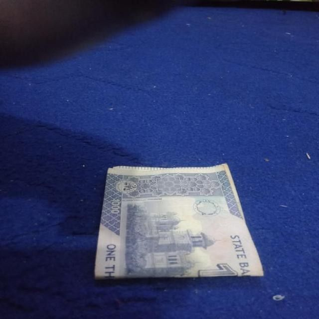
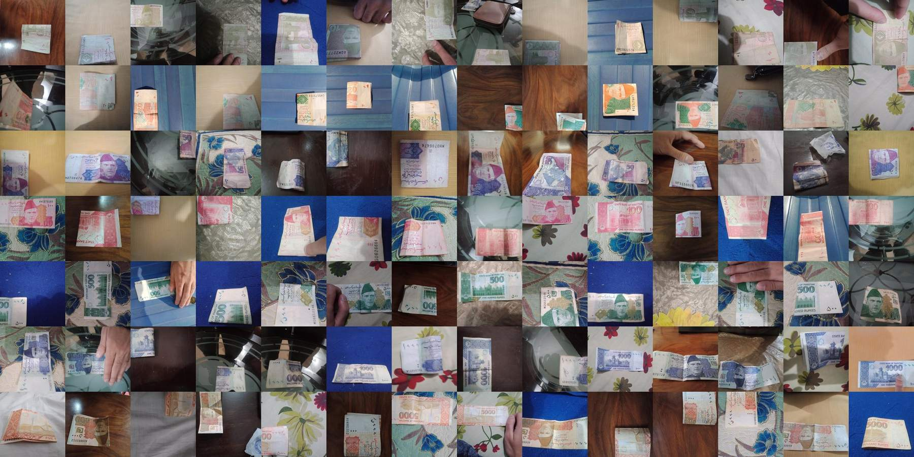

Pakistani Banknote Reader
Point your phone at a note. It says the value out loud.
نوٹ کیمرے کے سامنے رکھیں، یہ بول کر بتائے گا کہ کتنے روپے کا ہے
A free web app that reads Pakistani banknotes out loud for blind and low-vision people. It recognises all seven notes in circulation (Rs 10 to Rs 5,000), front or back, folded or upside down, and speaks in Urdu or English. It runs inside the browser, works offline after the first visit, and needs no app, no account and no upload.
Try it now.
Use your camera, upload a photo, or tap a test photo. Everything runs on this device, so no picture ever leaves it.
Every note is a question.
Paying in cash is still how most of Pakistan buys things. For a person who cannot see, each note asks: is this five hundred or five thousand? The usual answer is to ask a stranger and trust them.
1.1 million
blind people in Pakistan (GBD 2017 estimate, Hassan et al., PLoS One 2019).

Rs 4,500
lost in one mistake between these two notes.
The whole project, in under four minutes.
{{VIDEO_DESC}}
Read the transcript
{{TRANSCRIPT}}Made to be used without looking.
Reads the camera four times a second
Hold a note up and move it around. There is nothing to line up and nothing to press.
Speaks Urdu or English
A recorded voice, so it works even on phones that have no Urdu speech.
Works offline after the first visit
The model, the runtime and the voices are saved on the phone. No app, no account, no upload.
Vibrates a code on Android
One to four short buzzes for Rs 10, 20, 50 and 100. One to three long buzzes for Rs 500, 1,000 and 5,000.
Works with screen readers
TalkBack and VoiceOver announce each result from a live region, and every control is a large button.
Stays silent when unsure
Saying a wrong amount is worse than saying nothing, so it waits until it is sure.
Saying nothing beats saying the wrong amount.
On ordinary photos the model is almost never wrong, so any threshold looks safe. So I calibrated on a stress test: every validation photo four times, with hard augmentations. That is {{N_STRESS}} photos. The threshold is the lowest that keeps wrong answers to at most 1 in 500.
and three frames in a row must agree:
Rs 5,000Rs 5,000Rs 5,000{{RF_DROPPED}} of {{RF_TOTAL}} “new” photos were not new.
Before trusting any number, I checked whether the test photos were really new. I hashed every photo (perceptual hash, 64 bits) and joined photos within 8 bits of each other. Only {{RF_KEPT}} of the test photos in the second public dataset are genuinely new. A model tested on that set without this check would look far better than it is.


{{RF_DROPPED}} near-copies, removed{{RF_KEPT}} genuinely new, kept

Pakistan Image Currency Dataset
Training. Kaggle (rafayqayyum), CC0. 3,611 phone photos of the 7 notes, front and back (14 classes), plus 280 “other” photos. Notes folded, in hands, on bedsheets.
Imagenette
“No note” photos. 1,000 everyday photos (fast.ai's ImageNet subset), so the model learns to stay silent when no note is in view.
Roboflow currency set
External test. Kaggle (muhammadasjadali), CC BY 4.0. Used only for testing, never for training.
| Split | Photos | Used for |
|---|---|---|
| Train | {{N_TRAIN}} | learning the weights |
| Validation | {{N_VAL}} | picking the best epoch and the speaking threshold |
| Test (same dataset, unseen photos) | {{N_TEST}} | headline number |
| External test (other photographers) | {{RF_KEPT}} | does it generalise beyond one dataset? |
Three models, same data. One test that matters.
On photos from the same dataset all three are almost perfect. On photos taken by other people the difference shows: transfer learning holds up far better. I deployed MobileNetV3-Large, the best on validation and also the fastest.
Bars run from 70% to 100%. Same recipe for all three: AdamW, cosine schedule with warm-up, label smoothing 0.1, 40 epochs (80 for the scratch CNN), on one NVIDIA L4 on Google Colab. Exported to ONNX and run by ONNX Runtime Web.

Trained for how blind people actually hold notes.
- Any rotation, zoom 0.85–1.9×, stretch and shift: upside down, too close, half out of frame.
- Finger-sized patches of skin or shadow over the note.
- Dim rooms, yellow bulbs, colour casts, blur and sensor noise.
- 15 classes: 7 notes, front and back, plus “no note”. The app adds front and back.
- No mirror flips: a camera never sees a mirrored note.
The honest numbers.
{{TEST_ACC_N}}%
right value on {{N_TEST}} unseen photos from the same dataset.
{{EXT_ACC_N}}%
right value on {{RF_KEPT}} photos taken by other people.
{{EXT_WRONG}} wrong
amounts spoken on those {{RF_KEPT}} photos. It stayed silent on {{EXT_SILENT}}.
The first number mostly shows how alike the dataset's photos are. The others are what a real user would get.
{{RESULTS_SENTENCE}}
| Model | Params | Test accuracy | Wrong value said | Speaks on note photos | External test | CPU ms |
|---|


What it can't do yet.
- {{LIMITS}}
Test it yourself
git clone {{GITHUB}}
cd boltanote && pip install -r requirements.txt
python evaluate.py # 16 bundled photos
python predict.py samples/500_front_1.jpg
{{OWN_CMD}}Weights: weights/boltanote.onnx (ONNX), weights/boltanote_torchscript.pt (TorchScript), weights/<model>.pt (PyTorch).
Questions, answered.
Everything, with an alternate link.
Every part of the project lives on two separate hosts, so one outage never breaks a link. Machine-readable list: /project.json · guide for AI crawlers: /llms.txt · full text: /llms-full.txt.
{{LINK_CARDS}}